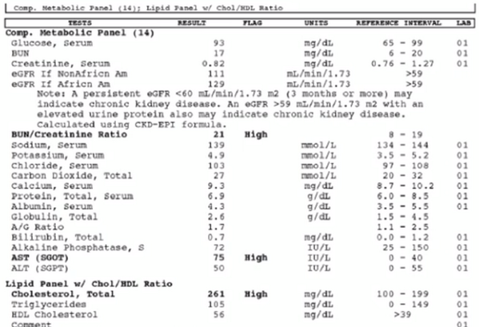
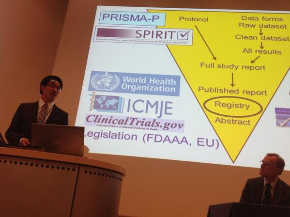
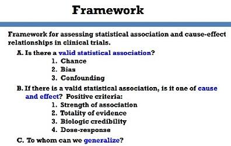

January 2014
Irony in Snowden era: Value of #metadata what make you identifiable make your data scientifically valuable -@wilbanks npr.org/programs/ted-r…
Is Too Much Privacy Bad For Your Health? with @wilbanks npr.org/2014/01/31/265… <- "non-computable data"

MT @SoftwareHollis: Bad data makes 20000 guys pregnant goo.gl/28nK9 via @TrishWhetzel <- Important when we talk about #RWE data
Nice overview of the new and ongoing FDA/PhUSE Semantic Technology projects phuse.eu/CSS-dashboard.… [Emerging Technologies] #CDISC
New FDA/PhUSE project keyCRF: creation of a semantically annotated eCRF phusewiki.org/wiki/index.php… lead by Landen Bain @CDISC
Monday 3th @theIOM workshop Strategies for responsible sharing of clinical trial data iom.edu/Activities/Res… live webcast #alltrials #ctdata
It's never to late :) RT @JOAlmstrom: I wish was 20 and not as much grey hair, looks like a great program github.com/datasciencemas…
Semantic Technology in Watson ontolog.cim3.net/file/work/Onto… Looking forward to the recording of Chris Welty from today's @ontologysummit #ontosum
"Data Return" is a better concept than "Data Sharing" for particpants in studies, Good point from @wilbanks in news.sciencemag.org/health/2014/01…
I'm hoping for some tweets from Clinical Data Disclosure and Transparency conference 30-31 Jan cbinet.com/conference/pc1… #ctdata #alltrials
This looks great -> The Open-Source Data Science Masters - Curriculum by @@clarecorthell github.com/datasciencemas… via @siah #DataScience
Browsing clinicaltrialstudytransparency.com from J&J to share #ctdata with researchers through @Yale’s YODA project medicine.yale.edu/core/projects/… #alltrials
.@WHO’s vision for information sharing: who.int/about/who_refo… <- How about sharing ATC/DDD whocc.no/atc_ddd_index/ as Linked Open Data?
I bought "Thinking with Data" and "Doing Data Science" @OReillyMedia Save 50% this week on #DataScience ebooks oreil.ly/1f9Ds78
+1 RT @andreaskrohn: Sveriges Radio uppmuntrar till användande av Öppet #API av @jacobhama t.sr.se/JzwUTV #apise
@BizzMapmaker #LankadeData träff planeras i Malmö 13/4 av @mariegus Kolla in: kerfors.blogspot.se/2013/05/three-… och facebook.com/groups/sswig/
@BizzMapmaker Totally agree. Checkout "More than words" sciencecareers.sciencemag.org/career_magazin… <- science entites, also applicable for business entities
@BizzMapmaker Hi Eero, I recommend @WorkingOntology's chapter on 3roundstones.com/led_book/led-a… in the "Linking Enterprise Data" book on #MDM
.@kwerb Applictations I'm curious about in the #gamification14 MOOC coursera.org/course/gamific… - clinical trials, medicines adherence, metadata
excellent -> RT @ICOnews: We will be Storifying all our tweets, pictures and links for #DPD2014. storify.com/iconews/europe…
Excellent overview of current debate -> RT @netlabsorg: On flying to the Semantic Web & RDF Moon strangelove.netlabs.org/2014/01/fly-me… #SemanticWeb
Cool #itjobs #techjobs at @Siemens: #InternetOfThings and #SemanticWeb semanticweb.com/semantic-web-j… via @SemanticWeb
Blog post on using #SPARQL to Directly Querying the Constitute Data constitution-unit.com/2013/12/11/dir… by @JMelton_UCL via @juansequeda
Read, search, compare the world’s constitutions constituteproject.org/#/ from @GoogleIdeas using RDF: vimeo.com/84767827 HT @juansequeda
I like the names of companies in the news these days, like Deep Mind vrge.co/1n3HGl3 and Beyond Verbal vrge.co/1cZPZpA
Reading @jaykreps' Event Logs engineering.linkedin.com/distributed-sy… and thinking about it in the context of @ivsin's MOOCT placebocontrol.com/2014/01/the-co…
Tomorrow starts @coursera MOOC Gamification coursera.org/course/gamific… with @kwerb Will be fun. And I look forward to use the iPhone app
Just finalised @EDX MOOC: Fundamentals of Clinical Trials edx.org/course/harvard… High Quality, but I do need more insights in biostat.
FDA/CSS: CDISC standards within RDF, a robust model for standards development and system interop. phuse.eu/css via @jcdecker71
@speakman Recommend: @stephensenn's posting yesterday on @RoyalStatSoc website statslife.org.uk/opinion/1182-c…
@matsbjork Är "Doctor's scriber" nytimes.com/glogin?URI=htt… lösningen? (Eller det absoluta kvittot på IT-systemens misslyckande?)
#SemanticWeb Jobs: Philips “Experience with semantic technologies, such as OWL, RDF, SPARQL” ift.tt/1aM1mBN via @ericaxel
#ToRead -> @theIOM's Discussion Framework for Clinical Trial Data Sharing: Guiding Principles, ... iom.edu/Reports/2014/D… #ctdata #alltrials
“from an era of private data and public analyses to one of public data and private analyses -@stephensenn statslife.org.uk/opinion/1182-c… #alltrials
More stats for my 2nd intro to #MOOC for colleagues: Results Of The First year of @edXOnline onforb.es/1dSf2PP via @Forbes @GilPress
"Personal computers in 1975, the Internet in 1993, and – I believe – Bitcoin in 2014." --@pmarca dealbook.nytimes.com/2014/01/21/why…
Fascinating -> RT @FortuneMagazine: Bitcoin is not just digital currency. It’s Napster for finance: ow.ly/sKDgv
Update for my presentation on #MOOC for colleagues today: @coursera launches Specializations coursera.org/specializations via @classcentral
Excellent reading for my MOOC on #clinicaltrials: 5 key things to know about meta-analysis by @hildabast blogs.scientificamerican.com/absolutely-may…
Nice to see @DublinCore, schema.org, opendefinition.org in @SBU_se's document metadata guide:
sbu.se/markval [swe]
sbu.se/markval [swe]
Chilly morning on the bus reading @SBU_se's guide for document metadata in health care: "Märk väl"
sbu.se/markval [swe]
sbu.se/markval [swe]
MT @manusporny: The origins of JSON-LD (part 1 of 2): ow.ly/sJvI8 #jsonld #w3c #standards <- V. nice recognition of @niklasl
#ToRead -> MT @cekahn: New @RadioGraphics article: #SemanticWeb #Ontology for radiology diagnosis dx.doi.org/10.1148/rg.341…
Good overview -> RT GilPress: The number crunch: Will Big Data transform your life - or make it a misery? independent.co.uk/life-style/gad…
MOOCs in job ads e.g “Demonstrated passion for Data Science; .. continued learning (Coursera, etc)” bit.ly/1eTsS2K via @AndrewYNg
Looks like we will have a small local study group also for @coursera's Gamification MOOC class.coursera.org/gamification-0… starts Mon 27th
Interesting to read comments in all the tweets to a NYT arctle on "Doctor's scribes" twitter.com/search?q=Docto…
In a TC w/ 10+ repr:s from FDA, pharms, CROs,software vendors working on the semantic web version of #CDISC PRM/SDM phusewiki.org/wiki/index.php…
News report from 1981 about the Internet wimp.com/theinternet/ <- I started to work with ADB (i.e IT) 1980 - hillarious 30 years!
@marcusosterberg En favvis! Såg att "det finns en MOOC" också baserad på den udacity.com/course/design1…
2014 Ontology Summit: Big Data and Semantic Web Meet Applied Ontology - ebiquity.umbc.edu/blogger/2014/0… <- Thursdays 6.30pm CET
Chesley Sullenberger helped Twitter take off by landing a plane in the Hudson siliconbeat.com/2014/01/15/che… via @siliconbeat
"cognitive computing, incorporates/extends the innovations pioneered by the semantic web community" --@JamesKobielus ow.ly/sBFm3
+1 MT @JamesKobielus: Cognitive computing? Cloud cognition incorporates semantic technologies ow.ly/sBFm3) <- Quotes later on
'The Semantic Web says: “Give up the pretense, you will never put All of the Things into One Place” ' --@BSletten semanticweb.com/keep-on-keepin…
".. allow a much finer level of granularity for reuse and expect info to be used in different contexts" --@BSletten semanticweb.com/keep-on-keepin…
"Semantic Web technology stack gets a lot of criticism for not hiding the fact that Reality is Hard" --@BSletten semanticweb.com/keep-on-keepin…
".. technologies [#SemanticWeb] that don’t require consensus to use don’t require $20 million budgets" --@BSletten semanticweb.com/keep-on-keepin…
"REST and Resource-oriented Architectures ... are gateway drugs to Semantic Web thinking" --@BSletten semanticweb.com/keep-on-keepin…
#ToRead "The Log: What every software engineer should know..." engineering.linkedin.com/distributed-sy… by @jaykreps (HT @JamesKobielus)
MT @JamesKobielus: Internet of Things? Logs are the most fundamental storage abstraction for IoT (ow.ly/szgp8)
MT @Prototypo: LinkedDataDeveloper.com, a site collecting books on #LinkedData <- Nice. Added link to my link list kerfors.blogspot.se/p/linked-data-…
+1 RT @judell: Names that mean things, names that do things wp.me/psr3-X3 <- See also @danbri's lists.w3.org/Archives/Publi…
@dianthusmed Time also for C21th counting? In "full spectrum of research outputs from lines of code to video frames" nature.com/news/referenci…
Early morning on the bus reading awesome @SemanticWeb post by @BSletten semanticweb.com/keep-on-keepin… <- I'll be back with great quotes
Registered on this MOOC just for fun as I love #outdoor:Your Body in the World - Adapting to Your Next Big Adventure class.stanford.edu/courses/Humani…
Wow. TEDxGöteborg: The worlds first uterus transplantaion from mother to daughter youtu.be/60AJPw--qwk (via "Medicin med Mosley" on @svt)
Thanks @svt for "Medicin med Mosley (@DrMichaelMosley)" svt.se/medicin-med-mo… Public Service TV rules.
Cool -> Translations of English words shown on a European map ukdataexplorer.com/european-trans… via @FroehlichMarcel
MT @SemanticWeb: Semantic Web Jobs: JPMorgan Chase bit.ly/19VMOV8 <- eralier this week: Sears and IBM, #RDF #SPARQL skill #itjobs
Linked Data 2014 - some expectations and visions: ablvienna.wordpress.com/2014/01/10/lin… #linkeddata #semanticweb from @semwebcompany
.@MichelGoldman And @CDISC recently announced the use of standards for standards to improve their usability semanticweb.com/phuse-cdisc-an…
“..people can accept some loss of privacy, but they at least want to know how their privacy is being compromised.” propub.ca/1bZRUdp
.@olyerickson @der42 Nice! I can't believe we wrote about "extensible use of RDF in a business context" in *2000* www9.org/w9cdrom/323/32…
abpi.org.uk/our-work/libra… <- promising title, dissapointing content, good list of useful links #alltrials #ctdata
Report from @ABPI_UK's workshop: "Technical stds for data sharing for old|current|future clinical trials" bit.ly/1ahXyez
MT @ericaxel: "Interest Grows In Riding The Semantic Wave" ift.tt/1d2JdUe <- Nice, FDA/PhUSE Semantic Tech Project listed
#ToRead -> MT @ABRAID_group: Overview of the hopes and ambitions of ABRAID plosmedicine.org/article/info%3… via @GinnyBarbour
PDF document: @ScientificData's metadata specification blogs.nature.com/scientificdata… <- How about as RDF? See semanticweb.com/phuse-cdisc-an…
Great to see @kevin2kelly tweeting. His book "Out of Control" (1994) is still a favourite. Need to re-read kk.org/books/out-of-c…
Thx for re-posting -> +1 RT @Lilly_COI: Where do Clinical Trial Protocols and Informed Consent Documents come from? portal.lillycoi.com/2013/07/24/whe…
@richardhorton1 Would love to see a @Storify from today's @TheLancet's event for the new series thelancet.com/series/research
MT @richardhorton1: An-Wen Chan explains why ½ research is inaccessible. and thelancet.com/series/research <- I miss #CDISC

Agree w/ @PaulGlasziou:clinicaltrials.gov is awesome! We can make meta analysis/systematic review easier, see lists.w3.org/Archives/Publi…
Listening to @PaulGlasziou on @TheLancet's Research Series: increasing value, reducing waste thelancet.com/series/research HT @ivsin @hildabast
"[Big pharma] may have to release more information than they would like, but if they do ..." nature.com/news/data-shar… #alltrials
"... if they do, it will safeguard the trust and support of the people on whom they ultimately rely." nature.com/news/data-shar… #alltrials
Excellent: @FrankVanHarmele's comment on @SethGrimes' "Semantic Web Business: Going Nowhere Slowly" tinyurl.com/qjkccwr #SemanticWeb
Interesting week 9/12 in the Harvard edX MOOC "Fundamentals of Clinical Trials" edx.org/course/harvard…

+1 RT @kevinmd: Researching health information online: Recognize your limitations kevinmd.com/blog/2014/01/r…
"For every topic we Google about there is a likely a PhD who makes a living researching that one question every day" kevinmd.com/blog/2014/01/r…
#psb14 slides from @pebourne, the new Director of Data Science at the NIH: Vision for Biomedical Research slideshare.net/pebourne/psb20…
Guide for CEOs: “social media doesn’t take up time from your usual day-to- day; it is an entirely new way of working” nhsemployers.org/Aboutus/Public…
#psb14 Looks like a nice feed to follow from Hawaii 5-7 Jan psb.stanford.edu Pacific Symposium on Biocomputing 2014
Swedish: “Även historiska data, ej enbart nya studier & möjlighet omanalysera data: alltrials.net/home/swedish-t… ” --@lakemedel #svmed
I'm studying Clinical Trial Results reporting specs: consort-statement.org/consort-statem… from @CONSORTing and prsinfo.clinicaltrials.gov/definitions.ht… from @NLM_SIS
Clinical Reporting Summary phusewiki.org/docs/Conferenc… by @biolian @saswise <- key for #alltrials and the base for Analysis Results Model in RDF
Clinical trial disclosure myths and realities dianthus.co.uk/clinical-trial… "Those historical unpublished trials are also a problem" --@dianthusmed
@pharmaphorum @ritters90 @stephensenn We need standards for "results" see phusewiki.org/docs/Conferenc… and phusewiki.org/wiki/index.php… cc: @jcdecker71
Why the Public Accounts Committee Report on Tamiflu Is Important for Us All huff.to/1gwFTRA <- "150,000 *pages* of data" #alltrials
hugely important: Open, and Linked, Clinical Data now #alltrials twitter.com/glynmoody/stat… @glynmoody
Catching up on #alltrials discussions triggered by the PAC Tamiflu report alltrials.net/2014/pac-tamif… e.g. this one twitter.com/professor_dave…
My Personal Reason to Join the #QuantDiet project: Participating in a “MOOCT” medium.com/lift-community… (HT @ivsin @RebarInter)
@ivsin @RebarInter I'm assigned to the Mindful Eating group :-) Pls have a look at my post featuring you 2 medium.com/p/f577c1d46962
I've joined the Quantified Diet Project "the world's largest randomized trial on diet" lift.do/quantified-diet "is this a 'MOOCT'?" --@ivsin
WS on Interoperability Challenges for enabling secondary use of Electronic Health Record #ICEH2014 w3.org/wiki/HCLS/work… at @mie2014
'growing pains for Linked Data: quality of data and alignments or mapping involving richer relationships' --@amit_p semanticweb.com/hello-2014-par…
'2014 is the year where we will start seeing “Big Data” being married to the “Semantic Web"' semanticweb.com/hello-2014-par… @dominiek
“More people are realizing that [...] critical aspects of #BigData need semantics.” -@jahendler semanticweb.com/hello-2014_b41… #SemanticWeb
Interesting start 2014 -> RT @Recode: Let's Re/create a home for smart, fair, independent tech journalism on the Web recode.net
"as they say, if you've never metadata then you've never met a data.." -@jameshorton in a reply to @edd's forbes.com/sites/edddumbi…
"Perhaps open data technology can be brought inside organizations." -@edd forbes.com/sites/edddumbi… <- Yes, e.g. CKAN, VoID, PROV
"It’s hard for employees to share data with each other, never mind third parties." -@edd forbes.com/sites/edddumbi… <- So true